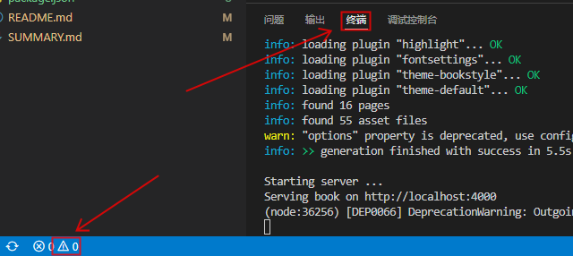
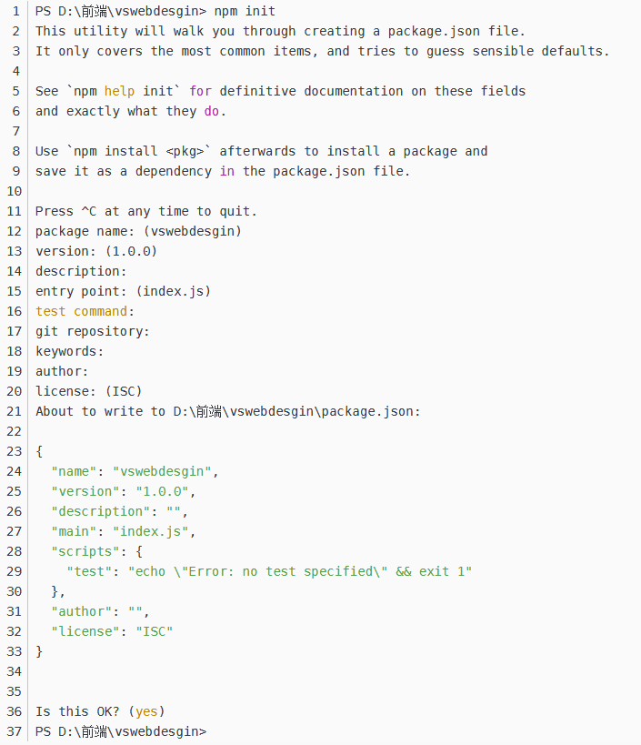
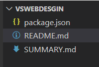
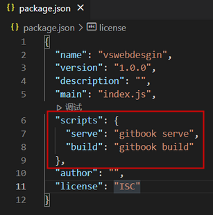
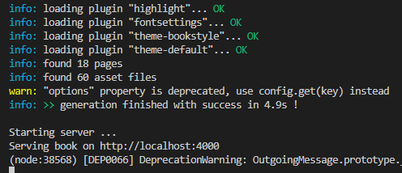

VS Code 运行 Gitbook
打开终端

初始化配置
1.在vscode终端里输入npm init，然后一直空格直到出现完yes

成功后出现以下这个json文件

2.更改文件代码并保存
{ "name": "vswebdesgin", "version": "1.0.0", "description": "", "main": "index.js", "scripts": { "serve": "gitbook serve", "build": "gitbook build" }, "author": "", "license": "ISC" }

3.运行服务
npm run serve
